Calm and safe to book with, adventurous where you land. Each option has its symbol, a lockup with the wordmark on light and dark,
a true 16 px check (actual size, then the same pixels enlarged), and one-colour and reversed versions on the night page colour.
Brief
Self-run flight search. Real round-trip fares, no ranking bias, no paid placement.
Feel
Calm, trustworthy, unhurried; the destination is the adventure.
Avoided
Birds, fluffy cloud-wings and anything Pokémon; also planes, globes, paper planes and swooshes (category clichés).
Wordmark
Commissioner, weight 560, a little flare (FLAR 50), outlined to paths.
Deep teal ink #003D57
Teal accent #176B87
Sky #86B6F6 → #B4D4FF
Ice #EEF5FF
Night #061925
Night accent #64C3E2
New: Daybreak #F2A65A (the sun; graphic only, never text)
A
Window Seat
Pictorial symbol
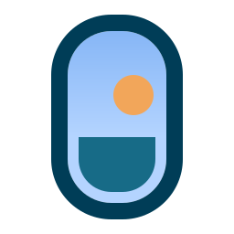
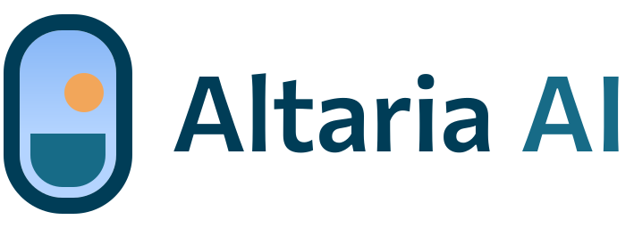
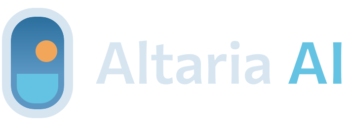
The view from seat 23A: a calm, framed sky with the sun over a sea of cloud, the moment the trip feels real.
16 px check
colour
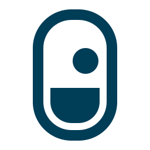
one colour
reversed
One colour and reversed
Calm frame, adventurous view: exactly the brief's split
Pure sky palette, sits naturally on the site
Stands alone, so it survives a rename
Risk: Tall footprint needs a tile for app icons; in one colour it can read as a toggle or a face at a glance.
Survives a rename: Yes
B
Horizon Ticket
Symbol (pictorial / abstract)
Recommended
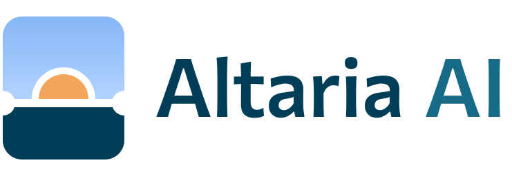
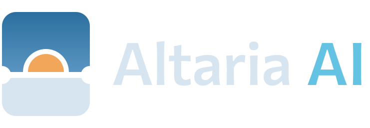
A ticket whose tear line is the horizon: the booked, safe half below, the sun rising over the destination above.
16 px check
colourone colour
reversed
One colour and reversed
Trust (the ticket) and adventure (the sunrise) in one silhouette
Square footprint: best app icon and favicon of the set
Stands alone, so it survives a rename
Risk: The side notches disappear under 24 px, where it reads as a generic 'sunrise' tile.
Survives a rename: Yes
C
Passport Seal
Emblem
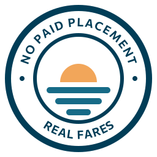
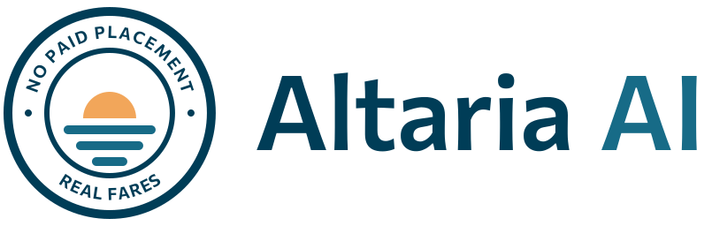
A passport stamp that doubles as a guarantee: “no paid placement, real fares”, around a sunrise over calm water.
16 px check
colour
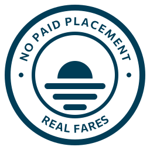
one colour
reversed
One colour and reversed
Says the product's promise outright
Passport stamps are pure travel adventure; seals read as trust
No name inside, so it survives a rename
Risk: Emblems don't shrink: the ring text is gone below 48 px, so it needs a centre-only small cut.
Survives a rename: Yes
D
Summit A
Letterform
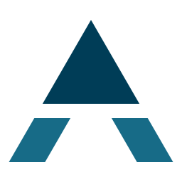
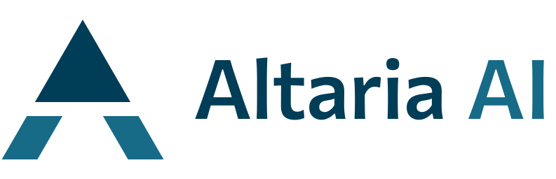
An A drawn as a mountain peak cut by a level horizon: the adventure above, its reflection resting below.
16 px check
colour
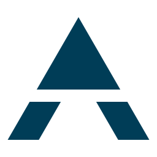
one colour
reversed
One colour and reversed
Strongest shape at 16 px of the set
Only two flat colours; cheapest to reproduce
Bold and sure, reads as a letter and a place
Risk: Tied to the letter A, so it goes if the product is renamed. Peak-shaped A's are common.
Survives a rename: No
E
Daybreak Wordmark
Wordmark
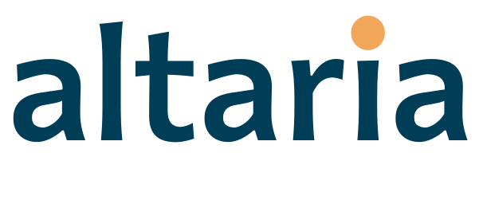
The name in Commissioner with full flare, the dot of the i rising as the sun.
16 px check
colour
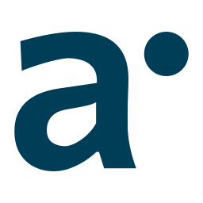
one colour
reversed
One colour and reversed
Uses the site's own typeface; zero friction to adopt
Quietest option, closest to 'huge calm type'
The apricot dot carries the whole brand into a favicon
Risk: It is the name, so a rename means redrawing it. The i-dot sun is a familiar move.
Survives a rename: No
Recommendation: B, Horizon Ticket
It carries both halves of the brief in one shape (a booked ticket, a sunrise beyond it), makes the best square app icon, and doesn't depend on the name. A is a close second if you want the mark to feel more like the site's sky.
What these are
First-round concepts, built as clean SVG paths with no live text. Colour is a hint only; the kit will add flat (no-gradient) masters, a small-size cut, and optical tuning of the chosen direction.
Before launch
No logo can be cleared here. Run a trademark search and a reverse image search on the chosen mark and name. Commissioner is under the SIL Open Font License, which allows logo use.